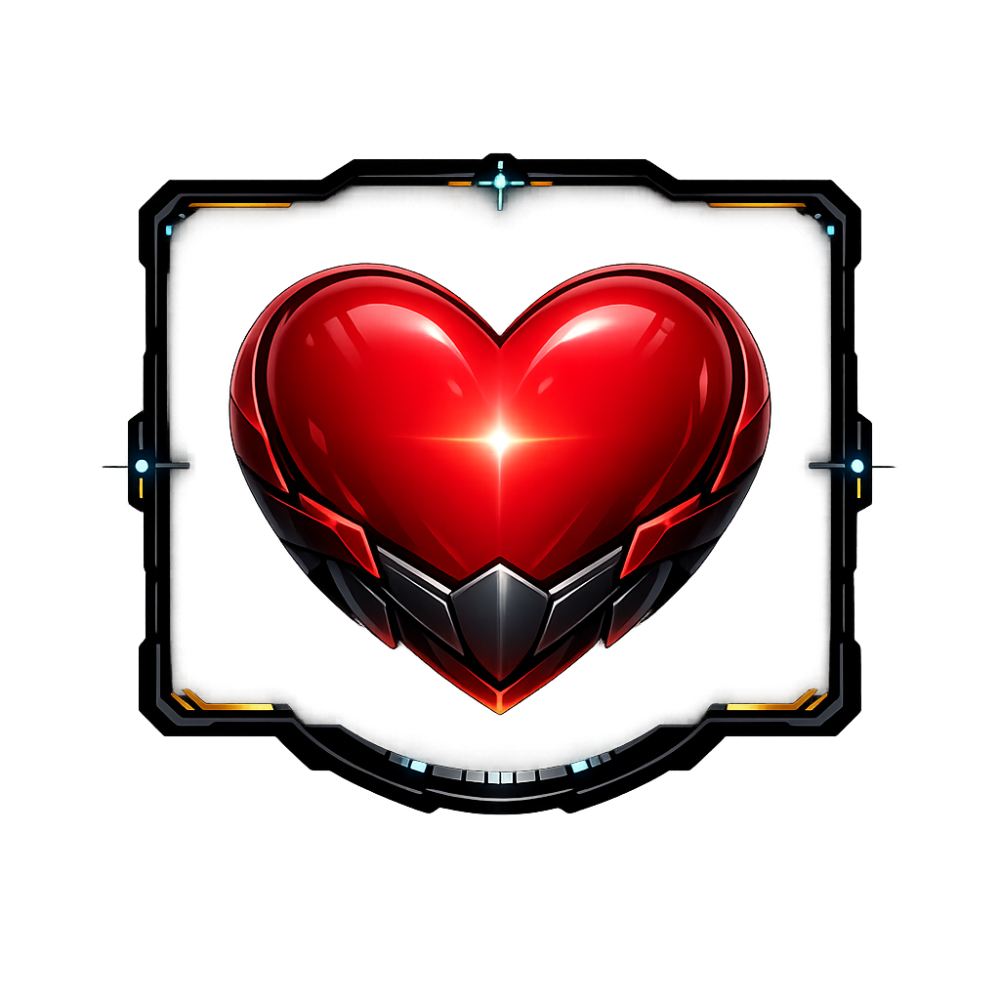
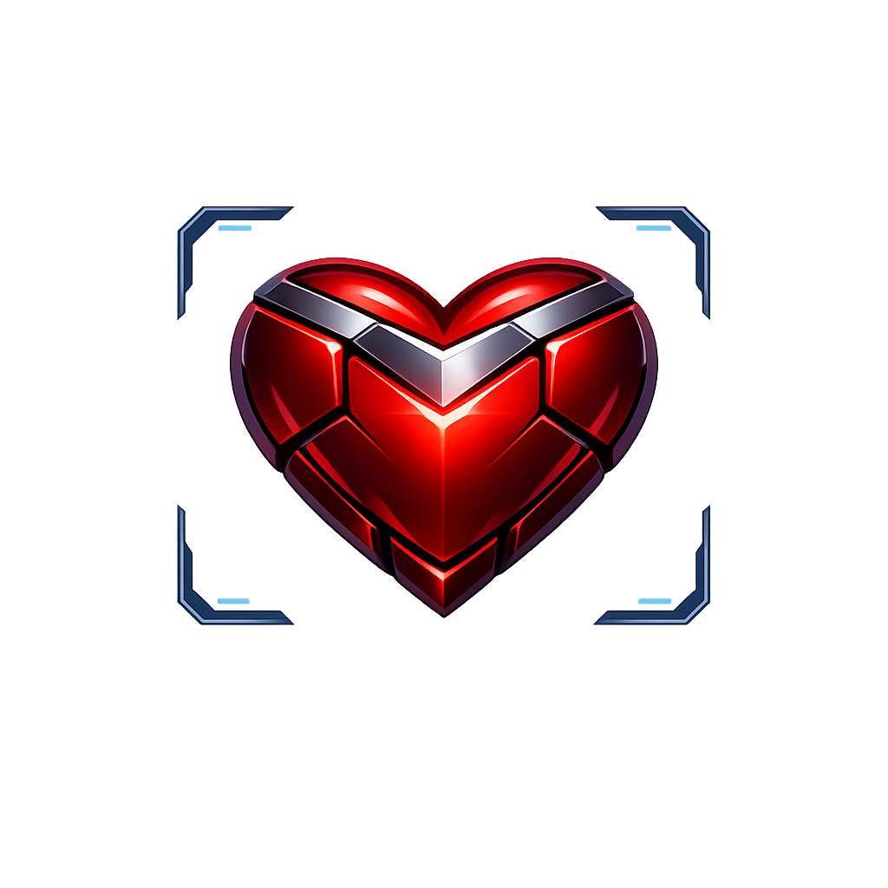
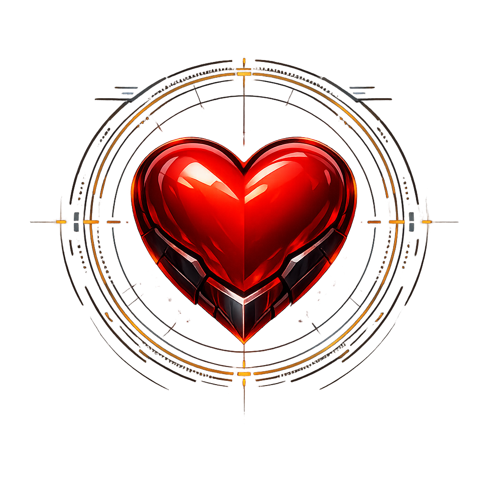
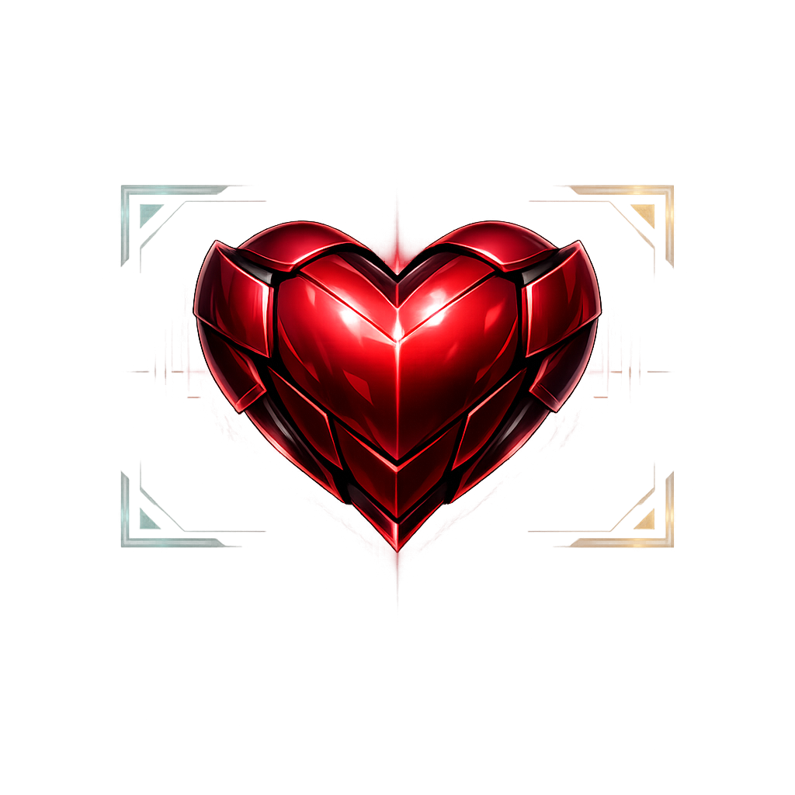

01
Balanced
Most literal blend of the two references. Strong heart, visible HUD, neither one fully dominating.
Say: 01 if the blend itself feels right already.
VigorCheck concept board
Same family, four tighter options. This pass is about one decision only: how much HUD should survive around the armored heart before it starts getting in the way.

01
Most literal blend of the two references. Strong heart, visible HUD, neither one fully dominating.
Say: 01 if the blend itself feels right already.

02
Pulls the frame back and lets the heart do the work. Usually the safest option for an app icon or welcome hero mark.
Say: 02 if readability matters more than extra sci-fi flavor.

03
Leans harder into the HUD lane with a circular targeting frame. Better if you want the mark to feel like a live health system.
Say: 03 if the sci-fi shell is part of the identity.

04
Best attempt at the “finished product” version. More premium, more intentional, still centered on the armored heart.
Say: 04 if you want the most shippable-looking direction.